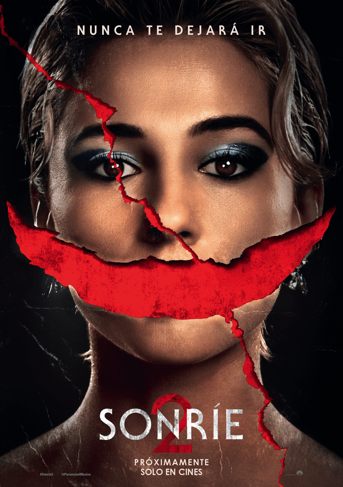
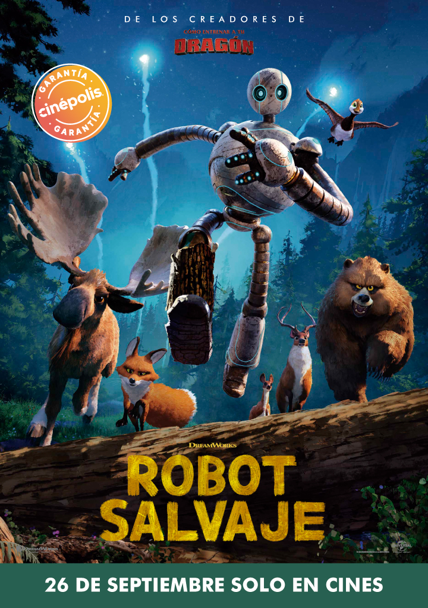
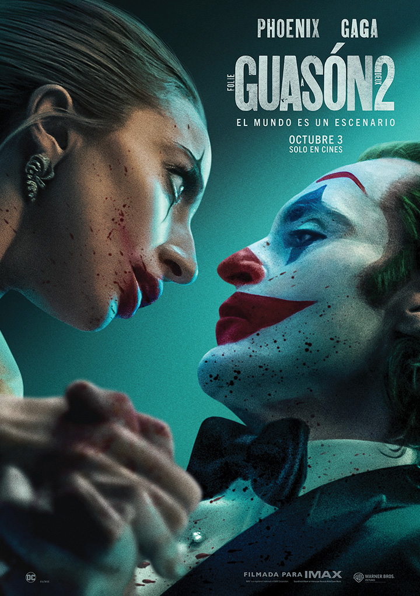

A punto de embarcarse en una nueva gira mundial, la sensación del pop mundial Skye Riley (Naomi Scott) comienza a experimentar sucesos cada vez más aterradores e inexplicables. Abrumada por la escalada de horrores y las presiones de la fama, Skye se ve obligada a enfrentarse a su oscuro pasado para recuperar el control de su vida antes de que se descontrole.

De la mano de DreamWorks Animation llega la tan esperada adaptación de un éxito literario: Robot Salvaje, de Peter Brown, el querido y galardonado libro best seller, número uno de la lista de ventas del New York Times. Esta épica aventura relata el viaje de una robot —la unidad ROZZUM 7134, “Roz” para abreviar, que naufraga en una isla deshabitada y debe aprender a adaptarse al duro entorno, estableciendo gradualmente relaciones con los animales de la isla y convirtiéndose en la madre adoptiva de un gansito huérfano. Robot Salvaje, una poderosa historia sobre el autodescubrimiento, es un emocionante examen del vínculo entre la tecnología y la naturaleza, y una conmovedora exploración de lo que significa estar vivo y conectado con todos los seres vivos que fue escrita y dirigida por el tres veces nominado al Óscar® Chris Sanders —el guionista y director de las películas de DreamWorks Animation How to Train Your Dragon, The Croods; y Lilo & Stitch, de Disney— y es producida por Jeff Hermann (las películas de DreamWorks Animation The Boss Baby 2: Family Business; coproductor de la franquicia Kung Fu Panda).

“Guasón 2: Folie À Deux” encuentra a Arthur Fleck institucionalizado en Arkham esperando juicio por sus crímenes como Guasón. Mientras lucha con su doble identidad, Arthur no sólo tropieza con el verdadero amor, sino que también encuentra la música que siempre ha estado dentro de él.
